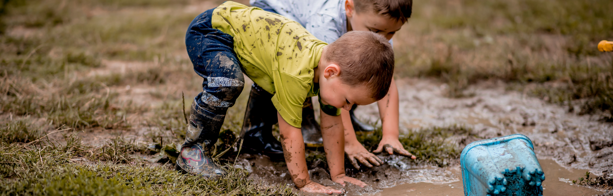
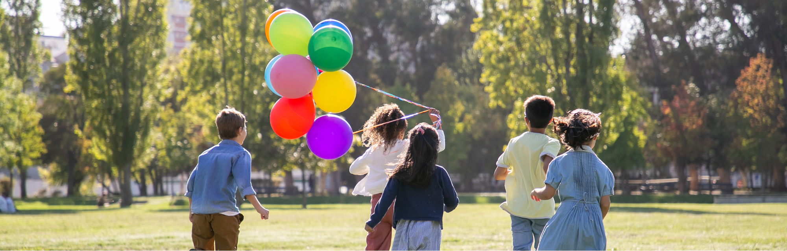

Der Sommer in der Kita kann so viel mehr sein als Planschbecken und Eisessen. Mit den richtigen Projekten wird die heiße Jahreszeit zur spannendsten Zeit des Jahres — für Kinder und Fachkräfte gleichermaßen. Hier kommen 15 Ideen, die wirklich funktionieren.
Projektideen
viele auch für Ältere
Wasser · Natur · Kunst
vieles aus der Natur
Warum Sommerprojekte so wertvoll sind
Heiße Tage fordern Kinder und Fachkräfte gleichermaßen heraus. Kinder sind unruhiger, brauchen mehr Abkühlung und gleichzeitig sinnvolle Beschäftigung. Gut geplante Sommerprojekte helfen dabei:
- Sie lenken Energie in sinnvolle Bahnen — statt Langeweile oder Überreizung.
- Sie fördern Neugier, Kreativität und Eigenständigkeit.
- Sie nutzen den Sommer als einzigartigen Lernraum — die Natur liefert alles.
- Sie stärken das Gemeinschaftsgefühl der Gruppe.
- Sie geben dem Tag Struktur und Fachkräften Freude an der Arbeit.

Kategorie 1: Wasser & Abkühlung
Blumen, Blätter, Beeren und bunte Steine in Eiswürfel-Formen einfrieren — über Nacht. Am nächsten Morgen aus den Formen lösen und beim Schmelzen beobachten. Ein echtes Naturwunder zum Anfassen. Variante: mit Farbwasser einfärben.
Eigene Seifenblasen-Mischungen herstellen (Spülmittel + Wasser + Glycerin) und verschiedene Blasstäbe aus Draht oder Strohhalmen ausprobieren. Wer baut den größten Stab? Wissenschaft und Spaß in einem.
Heiße Steine mit einem nassen Pinsel bemalen — das Bild verdunstet innerhalb von Sekunden. Kein Druck, kein Ergebnis. Ideal für Kinder, die Angst vor „Fehlern" haben. Fördert Achtsamkeit und Loslassen.
Erde, Sand und Wasser werden zur Matschküche: Kuchen backen, Tiere formen, Formen gießen. Matsch fördert Feinmotorik, Fantasie und sensorische Integration. Alte Klamotten nicht vergessen!
Teams befüllen einen Eimer auf der anderen Seite des Gartens — aber nur mit einem Schwamm, den sie über den Kopf tragen, quetschen oder unter dem Arm klemmen. Wer ist zuerst fertig? Teamgeist, Motorik und Abkühlung auf einmal. Ideal für Gruppen ab 3 Jahren.
Kategorie 2: Natur entdecken
Jedes Kind bekommt ein eigenes Gefäß und wählt sein Kräutchen: Basilikum, Minze, Zitronenmelisse. Gießen, beobachten, riechen — und am Ende in der Kita verkochen. Lernen über Monate hinweg.
Mit Blüten, Blättern, Steinen und Zweigen ein rundes Muster auf dem Boden legen. Symmetrie entsteht durch Ausprobieren. Am Ende fotografieren — dann die Natur ihren Lauf lassen. Fördert Ästhetik und Geduld.
Aus alten Holzresten, Tannenzapfen, Stroh und Bambus ein Insektenhotel bauen. Wer wohnt darin? Mit der Lupe beobachten. Ein nachhaltiges Projekt, das den ganzen Sommer bleibt.
Mit Lupen auf Entdeckungsreise: Wie sieht ein Blatt von unten aus? Was lebt unter dem Stein? Forscher-Hefte anlegen, Skizzen machen — Wissenschaft im Kleinen, echte Begeisterung.
Was wächst im Kita-Garten? Kinder ernten, waschen, schneiden und mixen ihren eigenen Sommer-Smoothie. Erdbeeren, Banane, Minze — alles erlaubt. Fördert Ernährungswissen, Feinmotorik und das Verständnis dafür, wo Lebensmittel herkommen.

Kategorie 3: Kreativ & Kunst
Kinder legen sich auf Asphalt oder Pappe, der Schatten wird nachgezeichnet. Am Mittag nochmal — der Schatten hat sich verschoben! Einstieg in Physik und Astronomie auf Kinderniveau.
Steine mit Acrylfarbe bunt bemalen, trocknen lassen und im Kita-Garten oder im Viertel verstecken. Die Freude, wenn jemand einen findet, ist riesig. Gemeinschaft und Kreativität zugleich.
Transparentpapier, Klebefolie und gesammelte Blüten und Blätter — zusammen kleben und ans Fenster hängen. Wenn die Sonne scheint, leuchtet der Sonnenfänger durch den ganzen Raum.
Aus Brombeeren (lila), Rote Beete (pink), Kurkuma (gelb) und Spinat (grün) eigene Farben herstellen und damit malen. Alles aus der Natur — ein echtes Aha-Erlebnis für Kinder und Erwachsene.
Mit einer Kita-Kamera gehen Kinder in Zweierteams auf Safari: Sie fotografieren alles, was ihnen am Sommer gefällt — eine Blume, eine Wolke, einen Käfer, einen Freund beim Lachen. Ergebnis: eine kleine Ausstellung im Eingangsbereich. Eltern sind begeistert.
Alle 15 Ideen auf einen Blick
Tipps für die Umsetzung im Kita-Alltag
So klappt es in der Praxis
- Projekte am Morgen starten — vor der Mittagshitze, wenn Kinder noch frisch sind.
- Immer einen Plan B für Regentage haben (viele Ideen funktionieren auch drinnen).
- Kinder in die Planung einbeziehen: „Was wollt ihr diese Woche ausprobieren?"
- Material sammeln lassen — Steine, Blätter, Zweige kommen gratis aus der Natur.
- Ergebnisse dokumentieren: Fotos machen, Forscher-Bücher anlegen, Ausstellungen gestalten.
- Eltern einbinden: Projektabschluss mit kleiner Präsentation im Eingangsbereich.
- Bei Wasserprojekten: Wechselkleidung bereithalten und Eltern vorab informieren.
Passende Fortbildungen dazu
Sommerprojekte sind nur der Anfang. Wenn du tiefer in Sprache, Musik, Bewegung oder Naturwissenschaften mit Kindern eintauchen möchtest, haben wir genau die richtigen Fortbildungen für dich:

Naturwissenschaften kreativ gestalten, Experimente und Forschergeist für den Kita-Alltag.
Zur Fortbildung →

Musikalisch-rhythmische Projekte für den Kita-Alltag — Bewegung, Tanz und Klang.
Zur Fortbildung →

Literacy, phonologisches Bewusstsein und Sprachförderung spielerisch in Projekte integrieren.
Zur Fortbildung →
Hast du eine dieser Ideen schon ausprobiert? Folge uns auf Instagram für noch mehr Praxisideen für den Kita-Alltag: